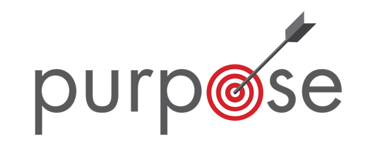

Tujuan Website :

Syalom salam sejahtera, Selamat datang di website ini, saya harap firman yang ada disini bisa meneguhkan kita semua yang membaca / melihat website ini. semoga apa yang bisa kita baca bisa menambah wawasan dan semakin bisa melihat bahwa kebaikan Tuhan Serta kasih anugerah Nya, Itu nyata diantara kita semua. semoga juga firman yang disini bisa memberkati bukan justru menjadi batu sandungan / terkesan menyesatkan. Supaya saya juga pemilik website ini bisa menjadi berkat dengan memberikan firman firman untuk kita baca setiap harinya dan manjadi asupan makanan rohani kita setiap hari.
Kesaksian Iman
Pentingnya bersyukur....
Tujuan saya membuat website ini ,yaitu supaya Iman kita semakin di teguhkan, walaupun posisi atau kondisi kita sulit supaya terus begantung kepada Tuhan dan bukan diri sendiri. Untuk menyadarkan kita atau mengubahkan kita supaya menjadi lebih baik hari ke hari, dan juga supaya kita semua bisa mempunyai hidup benar ketika lahir baru, dan sudah di siapkan untuk nanti di akhir zaman saat Kedatangan Tuhan Yesus Kedua kalinya dan juga Bapa di Surga. supaya kita bisa merasakan kehadiran Roh kudus, lewat firman yang disampaikan dan juga bisa meresponinya, supaya Roh kudus menuntun kita dan kita tidak disesatkan melainkan bisa memberikan teladan / contoh bagi orang lain terkhususnya orang yang belum percaya agar melihat kasih kristus lewat kita

Popular Post
 Renungan Singkat | Salib Kristus
Renungan Singkat | Salib Kristus Kesaksian Iman | Pentingnya Bersyukur
Kesaksian Iman | Pentingnya Bersyukur Kabar Injil | Daud dan saul
Kabar Injil | Daud dan saulIkuti Yesus
Karena itu pergilah, jadikanlah semua bangsa murid-Ku dan baptislah mereka dalam nama Bapa dan Anak dan Roh Kudus, dan ajarlah mereka melakukan segala sesuatu yang telah Kuperintahkan kepadamu. Dan ketahuilah, Aku menyertai kamu senantiasa sampai kepada akhir zaman.”